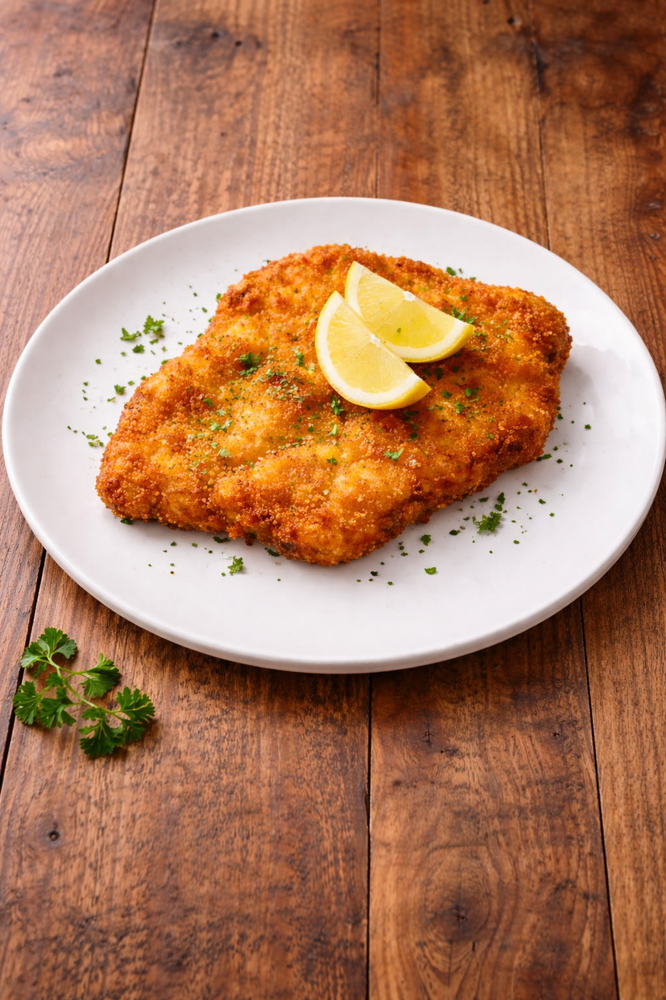

Schnitzel Wiener Art
30 Min.
medium
08.02.2026
Zutaten für
| 1 | dünne Schnitzel (ca. 0,5cm dick) |
| 40 | g Paniermehl |
| 20 | g Weizenmehl |
| 40 | g Butterschmalz |
| 1 | Eier größe M |
| beliebig viel Pfeffer | |
| Ausreichend Pflanzenöl |
Zubereitung
ca. 30 Minuten
Panierstraße vorbereiten: Drei tiefe Teller bereitstellen - im ersten Mehl, im zweiten verquirlte Eier mit etwas Pfeffer, im dritten Paniermehl.
Schnitzel würzen: Schnitzel auf beiden Seiten mit Pfeffer würzen (kein Salz vor dem Panieren, sonst wird's zäh).
Panieren: Schnitzel erst in Mehl wenden (überschüssiges abklopfen), dann durch die Eier ziehen, zum Schluss gleichmäßig im Paniermehl wenden und leicht andrücken.
Fett erhitzen: Olivenöl und Butterschmalz in einer großen Pfanne erhitzen (Verhältnis etwa 1:1, Fett sollte ca. 1 cm hoch stehen). Richtige Temperatur: Ein Holzlöffel im Fett bildet kleine Bläschen.
Braten: Schnitzel vorsichtig einlegen und bei mittlerer bis hoher Hitze goldbraun braten (ca. 3-4 Minuten pro Seite). Pfanne dabei leicht schwenken, damit das Schnitzel "schwimmt" und die Panade schön wellig wird.
Abtropfen lassen: Fertige Schnitzel kurz auf Küchenpapier abtropfen lassen und sofort servieren.
Rezept erstellt von